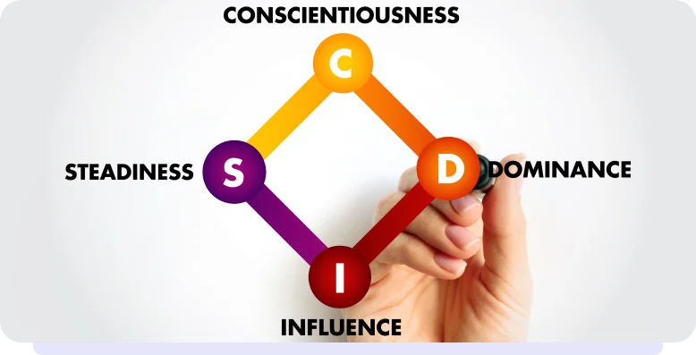

üëâ Nesta aula:
Vamos conversar sobre:
-
• Descobrir e desenvolver habilidades de lideran√ßa;
-
• Identificar habilidades de lideran√ßa e como aplicá-las em situa√ß√µes do cotidiano.
üëâ O que voc√™ entende por lideran√ßa?
Liderança é a habilidade de influenciar e guiar outras pessoas em direção a um objetivo comum. Um líder inspira, motiva e trabalha em equipe para alcançar o sucesso.
Exemplo de liderança no dia a dia: sabe aquele colega que, ao perceber que a sala está desorganizada, toma a iniciativa de iniciar a limpeza e a organização, envolvendo os colegas?
Essa pessoa demonstra liderança ao motivar os outros para alcançar um objetivo comum.
Refletiremos mais sobre como pequenas ações podem demonstrar liderança e como cada um pode contribuir positivamente em seu ambiente.
Seja um l√≠der resiliente üòä
Na aula passada falamos sobre resiliência.
Hoje vamos ampliar nossa visão sobre liderança, começando pelo vídeo.
Você é um líder resiliente?
Você já pensou como suas ações impactam suas relações?
Sabia que existem testes que ajudam a entender melhor suas habilidades e características?
Acesse este site e faça o teste gratuitamente: ✅
Acesse aqui

Para que descobrir meu perfil comportamental?
C:Consciência, D: Domínio, I: Influência, S: Estabilidade
Entender seu perfil é como desvendar um mapa do tesouro das suas habilidades!
Isso não só ajuda você a entender melhor quem é, mas também dá uma vantagem em situações importantes.
Empresas usam esse teste para achar “superpoderes” nas pessoas.
Menos mudanças de emprego, trabalhos mais legais e sucesso garantido!
Identificando suas habilidades no dia a dia
-
Liderança em grupo
Imagine que vocês estão organizando um evento escolar.
Sua habilidade de liderança pode brilhar ao coordenar as tarefas, garantindo que todos estejam na mesma página.
-
Agora é sua vez
No dia a dia, ser um líder também pode significar ser um bom amigo.
Ao ajudar seus colegas a resolverem problemas ou a se entenderem, você está mostrando habilidades de liderança nas relações interpessoais.
-
Identificando suas habilidades no dia a dia
Quando a turma precisa escolher uma atividade para fazer juntos, suas habilidades podem ser aplicadas na tomada de decisões.
Ouça as ideias de todos e ajude o grupo a escolher a melhor opção!
-
Colaboração nas amizades

Quais habilidades de liderança você identificou em você?
Anote aí no seu caderno.
Liderar √© saber se comunicar de forma efetiva. üí¨
Trabalhar em equipe demanda comunicação efetiva.
Ao liderar ou colaborar em projetos, destaque a importância de se expressar claramente, ouvir os outros e manter todos informados para alcançar os objetivos do grupo.
Liderar também é resolver conflitos entre amigos!
Quando há desentendimentos entre amigos, a liderança pode entrar em cena. Use suas habilidades de comunicação para ouvir ambos os lados, expressar ideias de maneira construtiva e ajudar a encontrar soluções que beneficiem a todos.
Tempestade de ideias
Para o desenvolvimento de estratégias de liderança, uma excelente ferramenta é utilizar post its para cada ideia, isso é chamado de “tempestade de ideias”.
Podemos usar também ferramentas on-line, como a plataforma de brainstorming Miro.
Saiba mais sobre a plataforma Miro:
A plataforma on-line Miro pode ser acessada de maneira colaborativa e contribuir com ideias de maneira visual e interativa.
Brainstorming on-line no Miro:
1. Crie um quadro no Miro dedicado ao tema “Liderança no Cotidiano”.
2. Adicione post its virtuais com suas ideias sobre como aplicar liderança em situações do dia a dia.
3. Identifique seus pontos fortes e escreva como eles podem influenciar positivamente seus colegas e familiares.
Imagine a seguinte situação...
Sua escola irá promover uma feira de empreendedorismo, em que os alunos podem desenvolver e apresentar seus próprios negócios.
O objetivo é estimular a criatividade, o trabalho em equipe e as habilidades empreendedoras.
Você e seus colegas decidiram formar um grupo para criar um negócio inovador para a feira.
Após algumas conversas, perceberam que há divergências sobre qual tipo de negócio desenvolver.
Alguns membros do grupo estão interessados em algo relacionado à tecnologia, enquanto outros preferem algo mais ligado à sustentabilidade.
Perante esses desafios:
1) Como conciliar diferentes ideias e interesses dentro do grupo?
2) Como tomar decisões de maneira democrática e garantir que todos se sintam ouvidos?
3) Como transformar a ideia escolhida em um negócio realista e viável para apresentar na feira?
Missão de um líder:
1) Analisar as diferentes ideias propostas pelos colegas.
2) Propor soluções para conciliar os interesses divergentes.
3) Colaborar na tomada de decisões democráticas.
4) Desenvolver uma estratégia para a ideia escolhida
Pensando como um líder, escolha a opção que melhor reflete como você abordaria a formação do grupo e o desenvolvimento do negócio para a feira de empreendedorismo.
Ao exercitar as atividades anteriores, você acaba de aprimorar suas habilidades de:
Desenvolver sua capacidade de liderança e trabalho em equipe.
Aprender a lidar com divergências de maneira construtiva.
Aplicar conceitos de empreendedorismo na prática.
Imagine você poder elaborar um pequeno projeto sobre como aplicar seus conhecimentos de liderança em seu dia a dia, seja na escola ou em casa.
Compartilhe com seus colegas e professores suas aprendizagens.
Use plataformas digitais que te auxiliem a elaborar seus projetos e compartilhar.
Aproveite a aprendizagem desta aula e desenvolva ainda mais sua liderança.
Assista o vídeo “Círculo Dourado”
Nossas descobertas durante esta aventura:
-
Descobrir e desenvolver habilidades de liderança;
-
Identificar habilidades de liderança e como aplicá-las em situações do cotidiano.

Na próxima aula...
Vamos falar sobre empatia.